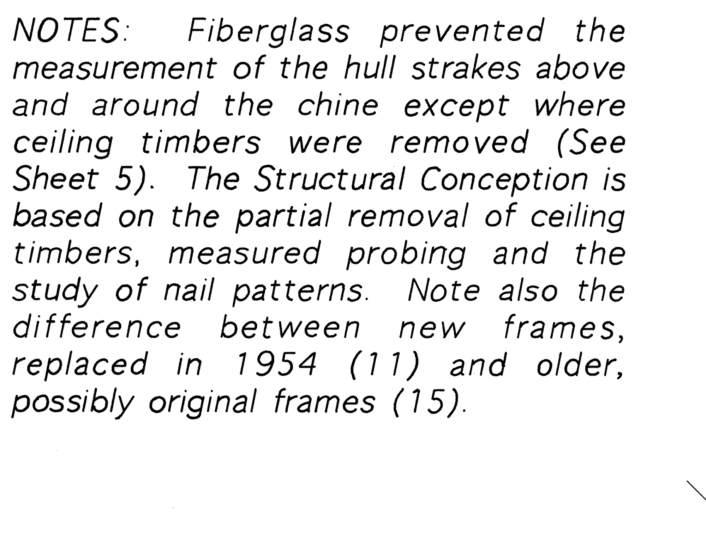

Original scan pixels: [5829, 1375, 8120, 3110]; source SHA-256: 86e6b7b3f2a1ae9b9b49ddcfcb6a01abc18f0712cd996af107e54c319cec421e.
Native lossless view · Raw OCR · Word coordinates/confidence · Manifest

Fiberglass prevented measurement above/around chine except where ceiling was removed. Structural conception is based on partial ceiling removal, measured probing and nail patterns. New frames replaced in 1954 (11), versus older possibly original frames (15).
NOTES: Fiberglass prevented the measurement of the hull strakes above and around the chine except where ceiling timbers were removed (See Sheet 5). The Structural Conception is based on the partial removal of ceiling timbers, measured probing and the study of nail patterns. Note also the difference between new _ frames, replaced in 1954 (11) and older, possibly original frames (15). \